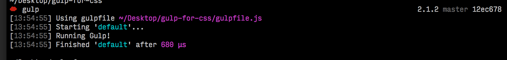

I recently evangelized using a task runner as a necessity in your front-end workflow.
The focus of this series it to show you, step by step, how to start working with task runners (in our case, gulp).
We are going to follow through the whole process, just like I was writing it from scratch.
This may seem technical if you have limited experience with terminal, but I’ve made it as easy as possible to follow along.
Also, if you prefer a different preprocessor, like Less or Stylus, the setup is very similar. You’ll just have to look at gulp-less or gulp-stylus when I start talking about sass.
Gulp is simply a way to take the code we author and transform it with other programs. This can allow us to do everything from minification to code linting.
All we are doing with gulp is loading up a series of files into a data stream, passing that stream through different programs… from input to output, modifying the stream as we go to suit our goals.
There’s not a lot to Gulp:
That’s it. Now let’s write some gulp.
I’ve set up some basic html, css, and javascript if you want to follow along: ryanlabouve/gulp-for-css, v0.1. Or feel free to try along with one of your own projects.
First, cd into the root of the project directory, initialize npm, and install gulp.
npm init
npm install --save-dev gulp
npm install --save-dev gulp-util
This has generated a basic package.json file, and added gulp and gulp-util as dependencies.
Note that the --save-dev actually adds our dependencies to the package.json file.
Now let’s work on the our gulpfile.js.
touch gulpfile.js
Require gulp, setup a default task, and then run gulp to make sure everything’s setup.
// gulpfile.js
var gulp = require('gulp');
var gutil = require('gulp-util');
gulp.task('default', function() {
gutil.log("Running Gulp!");
});
If we run gulp in our terminal we will see “Runing gulp!”.
ryanlabouve/gulp-for-css, v0.2

Now let’s setup a local server for our project.
This will make several things easier (like connecting to external services and resources).
npm install gulp-connect --save-dev
For our gulpfile we’ll add new new task called connnect that uses gulp-connect to start a server and add the new connect to run in our default task.
Again, for every plugin, we’ll have to require it at the top so we can use it in our gulpfile var connect = require('gulp-connect');… and then later connect.server…
// gulpfile.js
// requires...
var connect = require('gulp-connect');
gulp.task('connect', function() {
connect.server({
port: 8989,
livereload: true
});
});
gulp.task('default', ['connect']);
Now when we run gulp, and then navigate to http://localhost:8989 we see our project running in the browser.
Please note, on all of the gulp plugins I’m using I’ll link to the documentation, which will have further instructions on how to customize how we run the plugins.
ryanlabouve/gulp-for-css, v0.3
Let’s get SASS wired up now.
We’re going to be using the gulp-ruby-sass plugin to compile our SASS.
!important We are actually going to run an alpha version of the sass plugin. If you want to read more about that, here you go.
!important We are also going to turn on sourcemaps for our sass while we are here. It makes debugging sass much easier.
npm install --save-dev gulp-ruby-sass@1.0.0-alphanpm install gulp-sourcemaps --save-dev
Now I’m going to move all of the existing /css into /scss and changing the extension to .scss. (I’ll add a few sass variables too, so we can show the compiler is working).
Now, let’s add a gulp task and configure it to work:
We’ll require gulp-ruby-sass, make a new task called sass,
// gulpfile.js
//... requires
var sass = require('gulp-ruby-sass');
var sourcemaps = require('gulp-sourcemaps');
gulp.task('sass', function() {
return sass('scss/app.scss', {
'sourcemap': true,
'style': 'expanded',
'lineNumbers': true
})
.pipe(sourcemaps.write())
.pipe(gulp.dest('css'));
});
//... rest of the tasks
Now when we run gulp sass and check the /css directory we see that our sass has compiled successfully.
!imoprtant Note that we can pass any source into for the sass function to process and any destination into gulp.dest for it to write out to. Try changing to pipe(gulp.dest('dist/css')); and see how you can mold gulp to store your projects however suits you.
checkpoint: ryanlabouve/gulp-for-css
Currently we have to gulp sass after every change we made.
Instead, let’s have our server running and our sass compiling at the same time, as well as livereload-ing our pages every time we make a change
The watch task is really easy. We are simply watching a glob of file (i.e. ‘*/.scss’, or, everything in the scss folder) for a change, and then running a task if we detect a change.
gulp.task('watch', function() {
gulp.watch('**/*.scss', ['sass']);
});
Next we’ll expand our default task to: run sass immediately when we start gulp, start the local server with connect, and finally set gulp to keep watching for changes.
gulp.task('default', ['sass', 'connect', 'watch]);
Finally, we’ll add one line to the end of our sass task to tell livereload to trigger after we run sass.
.pipe(connect.reload());
Here’s the full gulpfile, in all of its glory!
// gulpfile.js
var gulp = require('gulp');
var gutil = require('gulp-util');
var connect = require('gulp-connect');
var sass = require('gulp-ruby-sass');
var sourcemaps = require('gulp-sourcemaps');
gulp.task('sass', function() {
return sass('scss/app.scss', {
'sourcemap': true,
'style': 'expanded',
'lineNumbers': true
})
.pipe(sourcemaps.write())
.pipe(gulp.dest('css'))
.pipe(connect.reload());
});
gulp.task('connect', function() {
connect.server({
port: 8989,
livereload: true
});
});
gulp.task('watch', function() {
gulp.watch('**/*.scss', ['sass']);
});
gulp.task('default', ['sass', 'connect', 'watch']);
Sweet! Let’s review what we’ve done
Next time, in part two, we’ll look at how to have different stylesheet builds for development stylesheets and production stylesheets.
—Ember.js & Node—
Disciple of Jesus Christ & family man. Doer of JS & maker of webs.